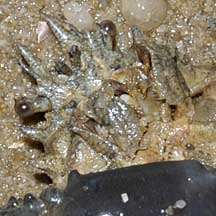
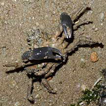
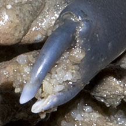
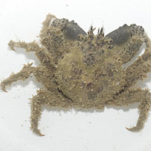
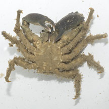
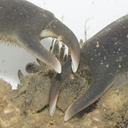
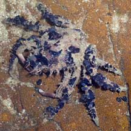
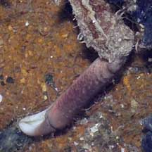

|
|
| crabs text index | photo index |
| Phylum Arthropoda > Subphylum Crustacea > Class Malacostraca > Order Decapoda > Brachyurans > Superfamily Majoidea |
| Sea
toad spider crab Schizophrys sp.* Family Majidae updated Dec 2016 Where seen? This large squat crab is sometimes seen on some of our shores, clinging to coral rubble, large boulders or hiding under living corals. Relying on its camouflage, the crab moves slowly. Features: Body width 4-5cm. Body teardrop-shaped with large spines on the sides. Large eyes on short stalks with a pair of spines between them. Pincers long cylindrical, tucked downwards under the body, claws with spoon-shaped tips. Body and walking legs usually covered with encrustations, except for the ends of the pincers. Some may have small bits and pieces stuck on their bodies, but they are not as well 'decorated' as the Velcro crabs (Camposcia retusa). |
 Changi, May 09 |
 Eyes wide apart. |
|
 One pincer bigger than the other. |
 Close up of pincers |
|
 Pulau Sekudu, May 12 |
 |
 |
*Species are difficult to positively identify without close examination.
On this website, they are grouped by external features for convenience of display.
| Sea toad spider crabs on Singapore shores |
On wildsingapore
flickr
|
| Other sightings on Singapore shores |
 Raffles Lighthouse, Jul 06 |
 |
|